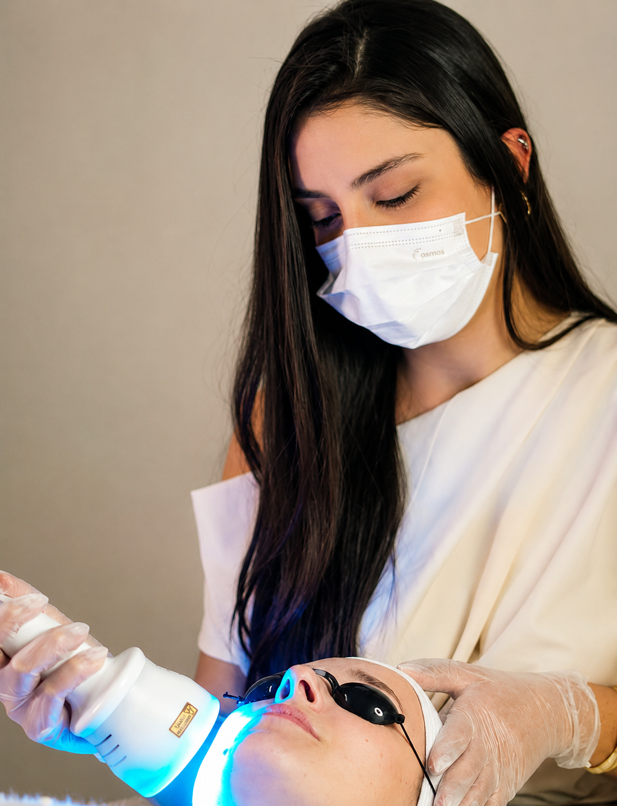
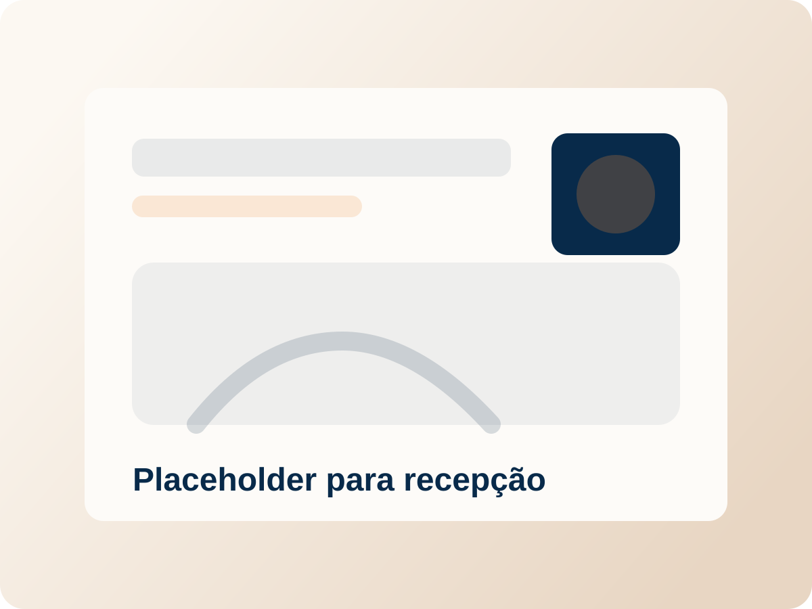
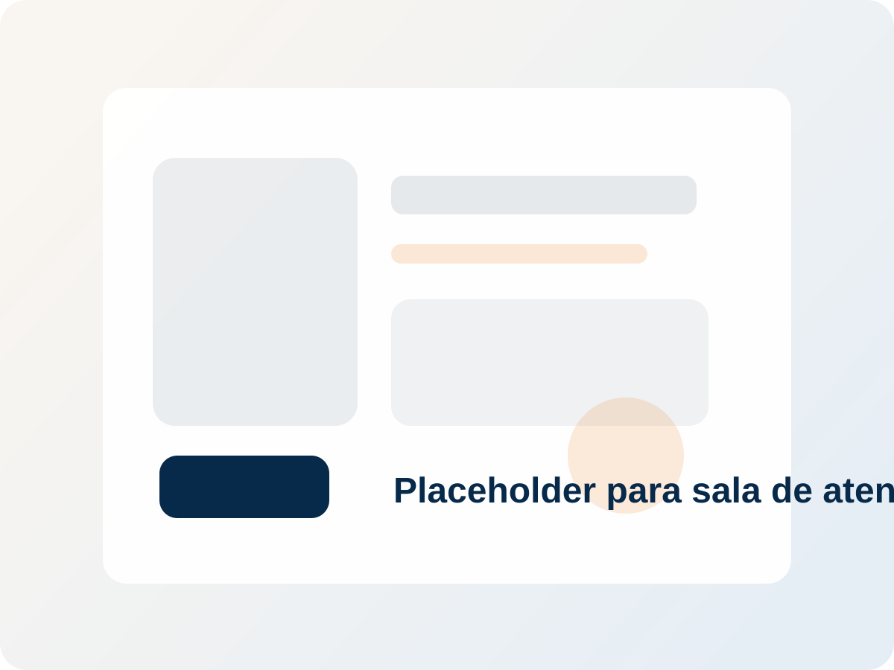
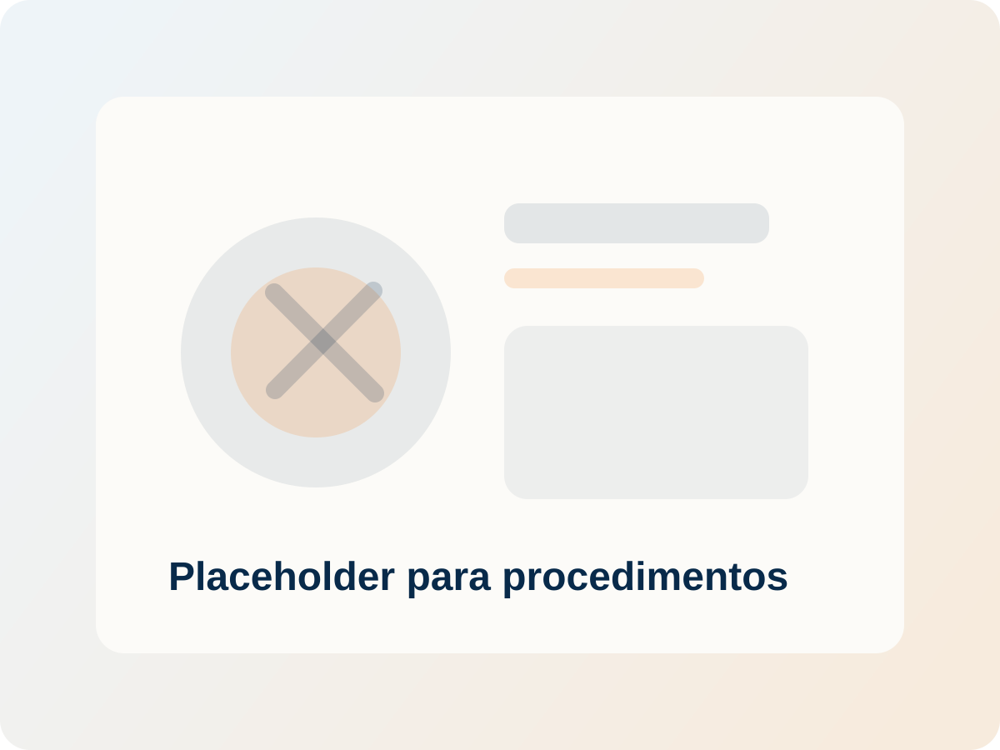
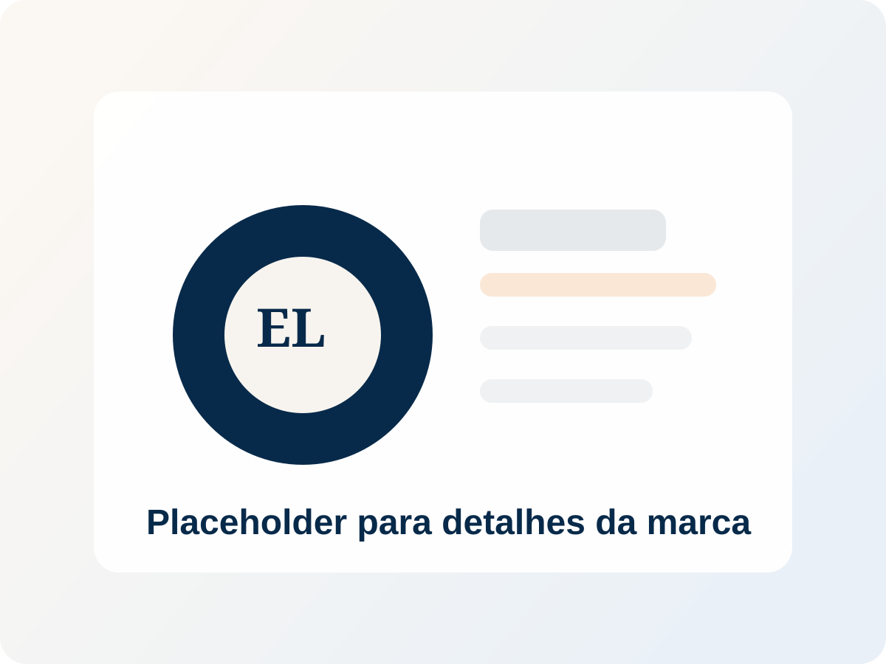

Estética avançada com atendimento cuidadoso
Estética avançada com cuidado personalizado para valorizar o que você tem de melhor
Protocolos faciais e corporais pensados de forma individual, com avaliação profissional, tecnologia e atenção aos detalhes.
- Crio-E
- Lavieen
- Depilação a Laser
- Limpeza de Pele
- Diástase PHE
- FlaciOff
Resultados dependem de avaliação, indicação e resposta individual de cada paciente.

Avaliação individual e protocolos personalizadosTratamentos em destaque
Protocolos faciais e corporais com indicação individual
Conheça algumas das opções disponíveis na clínica. A definição do protocolo ideal depende de avaliação profissional.
Crio-E
Tecnologia voltada para protocolos corporais, com indicação alinhada ao objetivo e à avaliação de cada caso.
Quero saber maisDiástase PHE
Protocolo pensado para acompanhamento individual, com cuidado na indicação e orientação conforme avaliação.
Quero saber maisFlaciOff
Opção corporal avaliada caso a caso, com protocolo ajustado às necessidades observadas durante o atendimento.
Quero saber maisDepilação a Laser
Atendimento com tecnologia e orientação prévia para entender indicação, cuidados e frequência do protocolo.
Quero saber maisLavieen
Procedimento facial integrado a um plano individual, com atenção ao momento da pele e às necessidades apresentadas.
Quero saber maisLimpeza de Pele
Cuidado facial com olhar técnico para rotina, sensibilidade e condutas adequadas ao tipo de pele.
Quero saber maisComo funciona
Um processo claro, acolhedor e pensado para orientar cada etapa
Você chama pelo WhatsApp
O primeiro contato acontece de forma prática para que a equipe receba sua solicitação.
A equipe entende sua necessidade
Suas dúvidas e objetivos são ouvidos com atenção para direcionar o próximo passo.
É feita uma avaliação individual
A indicação considera suas características, prioridades e o que faz sentido no momento.
O protocolo indicado é explicado com clareza
Você recebe orientação profissional sobre possibilidades, cuidados e planejamento do atendimento.
Diferenciais
Uma experiência pensada para você se sentir segura, acolhida e bem cuidada
Ambiente organizado
Um espaço claro, limpo e preparado para oferecer conforto em cada etapa do atendimento.
Atendimento humanizado
Escuta atenta e orientação profissional para que você se sinta acolhida desde o primeiro contato.
Tecnologias e protocolos atuais
Tratamentos selecionados conforme proposta do atendimento e necessidade individual observada.
Clareza antes de iniciar qualquer procedimento
Informações objetivas sobre indicação, cuidados e etapas para que a decisão seja consciente e tranquila.
Prova social
Experiências que ajudam a transmitir confiança
Espaço reservado para avaliações reais de pacientes e clientes.
★★★★★
Depoimento de cliente
Texto da avaliação aqui. Use um relato real sobre atendimento, ambiente, acolhimento e experiência.
★★★★★
Depoimento de cliente
Texto da avaliação aqui. Substitua por um depoimento aprovado, com linguagem natural e objetiva.
★★★★★
Depoimento de cliente
Texto da avaliação aqui. O ideal é mostrar percepções sobre o cuidado, a orientação e a experiência no espaço.
Espaço físico
Uma clínica pensada para transmitir organização, leveza e confiança
Use esta galeria para apresentar o ambiente com imagens reais da recepção, salas e detalhes de marca.




Perguntas frequentes
Informações rápidas para quem está conhecendo o atendimento
Como funciona a avaliação?
A avaliação é o momento de entender sua necessidade, histórico e objetivo para orientar o protocolo mais adequado.
Os tratamentos são personalizados?
Sim. Os protocolos são pensados de forma individual, conforme a indicação profissional e a resposta de cada pessoa.
Posso tirar dúvidas antes de agendar?
Sim. A equipe pode orientar o primeiro contato pelo WhatsApp e ajudar no encaminhamento da avaliação.
Onde fica o atendimento?
O espaço de atendimento deve ser informado aqui com endereço real, bairro, cidade e ponto de referência, se necessário.
Como faço para marcar horário?
Basta chamar pelo WhatsApp. A equipe organiza a conversa inicial e orienta os próximos passos para o agendamento.
Atendimento com foco em clareza
- Tratamentos faciais e corporais com indicação individual
- Planejamento de protocolo conforme necessidade observada
- Orientação profissional desde o primeiro contato
Agendamento
Quer entender qual tratamento faz sentido para você?
Fale com a equipe e receba orientação para agendar sua avaliação.
Chamar no WhatsApp
Atendimento com cuidado técnico e personalizado. A indicação de qualquer protocolo depende de avaliação individual.